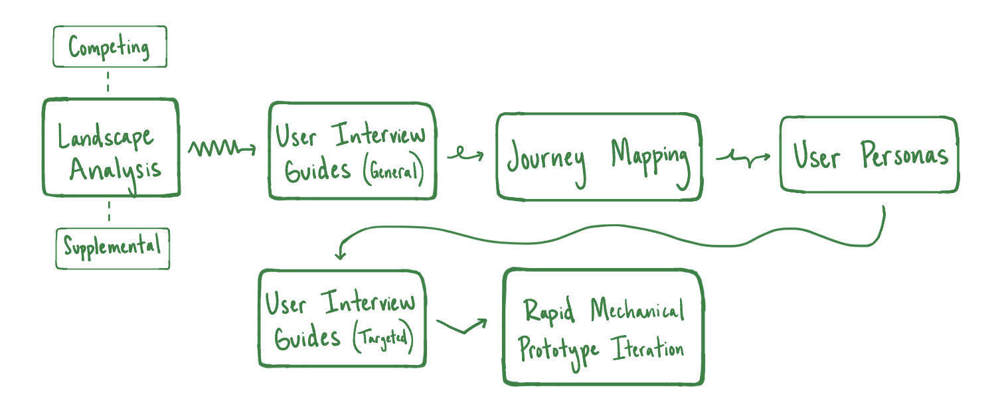
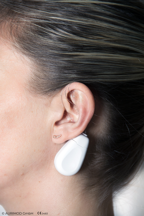
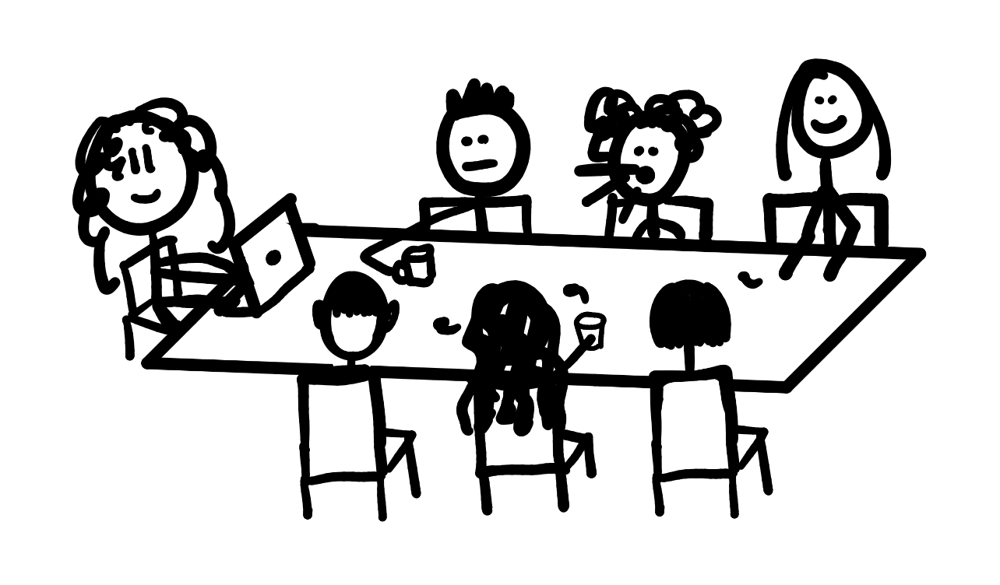

AuriMod is a biotechnology startup based in Vienna, Austria developing a new-to-world device in an emerging product category: vagus nerve stimulation. As a Products Research and Design Intern, I owned early-stage product discovery — conducting benchmarking analysis of 12+ biomedical products, leading user research, and synthesizing insights into strategic recommendations that directly shaped product development decisions. The most important thing I learned wasn't about the market. It was about what it means to do good work inside someone else's vision: the product I believed in most didn't align with where leadership was taking the company, and contributing meaningfully meant understanding their use case and redirecting my efforts to align with their goals.
Problem Statement
Conduct a landscape analysis of existing products to identify similar products' strengths, unmet needs, and user desires; with these findings, develop user testing material that extracts additional insights from potentials clients and present more pleasing alternative mechanical prototype/packaging solutions.
Methodology

Benchmarking Existing Products
Defining the landscape meant identifying adjacent products, understanding where they fell short, and locating the gaps that a new-to-world solution could credibly fill. I also identified products with use cases that fell far outside the biotechnology realm, but featured similar functionalities mechanically that, if beneficial to user experience, could be implemented into mechanical design.
I delivered two documents featuring the pros and cons of design choices that, dependent on unique use cases, achieved different product functions; one document targeted products in the same space and one document focused on seemingly unrelated products with surprisingly similar design.

Journey Mapping and User Definition
As I went to iterate the prototype, I independently realized there was not a clear vision among the R&D team of who we were designing for. So, I took initiative and built a potential journey map for this product's use case, highlighting potential pain points that the landscape analysis shed light on. Based on these pain points, I created six nuanced use cases with three user personas each. I presented a select handful of these user personas to leadership to discuss who they saw this product serving and in doing so align R&D and the executive team.
Getting to Users Directly
I developed user testing guides dependent on AuriMod's desired learnings and use case specific questions to lead interviews and focus groups with potential users. This process strengthed my ethnographic skills by developing open-ended questions that would generate the most meanignful conversation about unmet needs, the unarticulated frustrations, and preferred functionalities, uncovering what people actually do rather than what they think they want. The gap between those two answers is where the most useful product insights tend to live.

From Insights to Recommendations
I synthesized qualitative and quantitative insights to drive product recommendations for the future that I would not have time for, which I presented to leadership. However, I also practiced my rapid prototying by producing new mechanical designs of the product that iterated on the existing prototype, informed by my takeaways from talking to users.
My analysis pointed toward a product direction I found compelling, but it wasn't the direction leadership was pursuing. Understanding why required getting close to their perspective: learning their use case, understanding the persona they were designing for, and recognizing that my job wasn't to redirect the company. It was to make their vision as strong as possible.
Design Requirements
My research documentation, user testing guides, recommendations, and protoype iterations, needed to:
- Grounded in user desires
- Differentiated from market
- Actionable for future team
- Provides clear additional learning opportunities
Solution
My work at AuriMod spanned the full early-stage discovery process — from landscape analysis through user research to prototype iteration. The through-line was always the same: get as close to the real user and the real market as possible before making recommendations, and make sure every recommendation has a clear line back to evidence. Through these deliverables, I better aligned cross-functional teams that had become disconnected at the startup.
Systematic evaluation of 12+ biomedical products produced two deliverable documents exploring dimensions of functional performance, usability, and market positioning, identifying technical strengths, gaps, and opportunities in the emerging product landscape and supplemental informative designs.
Designed and led interviews, surveys, and focus groups to capture unmet needs and functional requirements directly from users, translating behavioral observations into concrete product insights.
Synthesized research findings into defined performance metrics and prototype iteration direction, giving the development team an evidence-based foundation for early-stage product decisions.
Working in a Cross-Cultural Startup Environment
AuriMod operates as a fast-paced, cross-cultural R&D team based in Vienna. Contributing effectively meant adapting to a different working cadence, communicating across language and cultural context, and moving quickly with limited resources and high ambiguity. The startup environment compressed the distance between research and decision-making: findings fed directly into live development conversations, not future planning decks. I also used this opportunity to build community and learn more about the culture I was experiencing by facilitating cultural discussions during the workday.


What's Next
AuriMod is continuing to develop the product through the prototype iteration cycle informed by the research and requirements work completed during my internship. My most critical contribution to the team was re-aligning R&D and leadership by asking questions and shedding light on an crucial, yet overlooked, design consideration - the target user experience. They are now designing for the same user.
For Me
I came into this internship confident in my ability to analyze a landscape and identify the strongest product direction, and I did that. What I didn't expect was having to devalue some of my individual design principles to contribute to the company's direction. Making an effort to better understand leadership's use case and vision, and then running hard with that vision, turned out to be where I grew the most. I also walked away better darts competitor and with an appreciation for an international work culture.